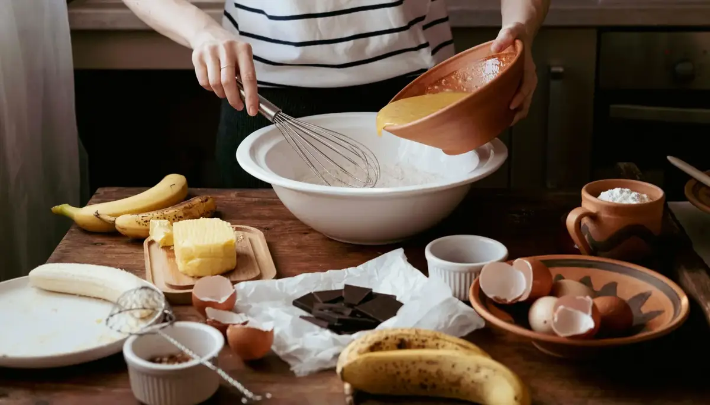

About Us

Hayden’s Recipes was made for people who are new to baking and just want something simple to follow. A lot of baking recipes can be confusing at first, especially when they expect you to already know fancy words or techniques. This site is here to make baking feel less stressful and easier to get into.
All the recipes on this site are ones I actually like and make myself. I have practiced them over time and tried to keep them as simple as possible. The ingredients are easy to find and the steps are written in a way that wont make you feel lost. It is not about being perfect, it is about learning and having fun.
If you are baking for the first time or just want a recipe you can trust, Hayden’s Recipes is here to help you feel more confident in the kitchen and get better one recipe at a time.
Our Mission
Our mission is to make baking feel less scary and more fun for everyone. A lot of beginners quit because recipes are confusing or way too complicated. We want to fix that by keeping things simple and easy to understand.
Each recipe is broken down into clear steps and explains what should be happening as you go. This helps people understand not just what to do, but why they are doing it. Over time, this helps build confidence and makes baking feel more natural.
At the end of the day, Hayden’s Recipes is all about helping people feel proud of what they bake and want to keep trying new things in the kitchen.